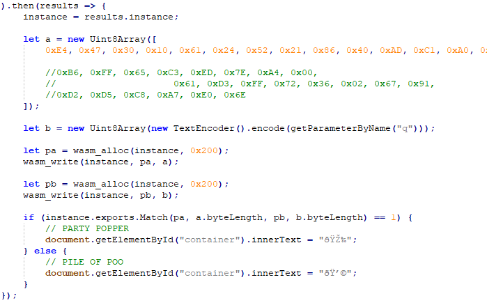
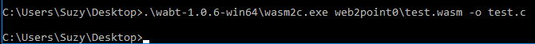
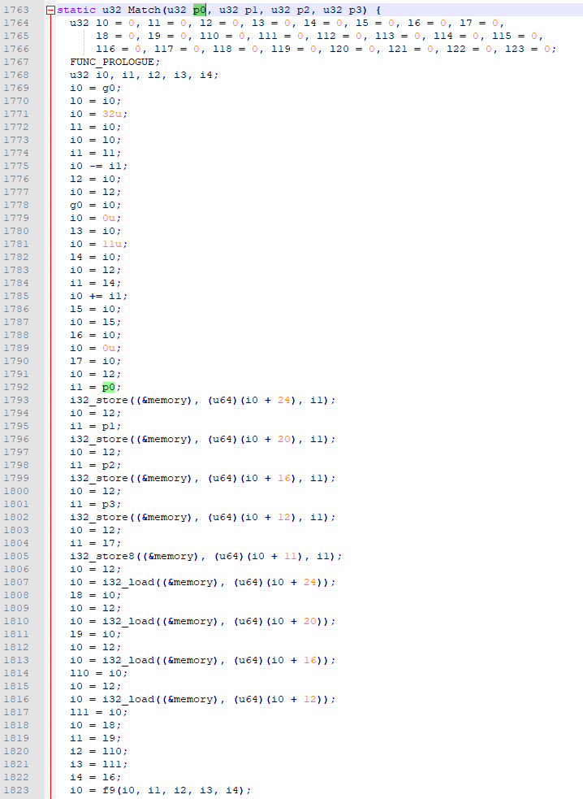
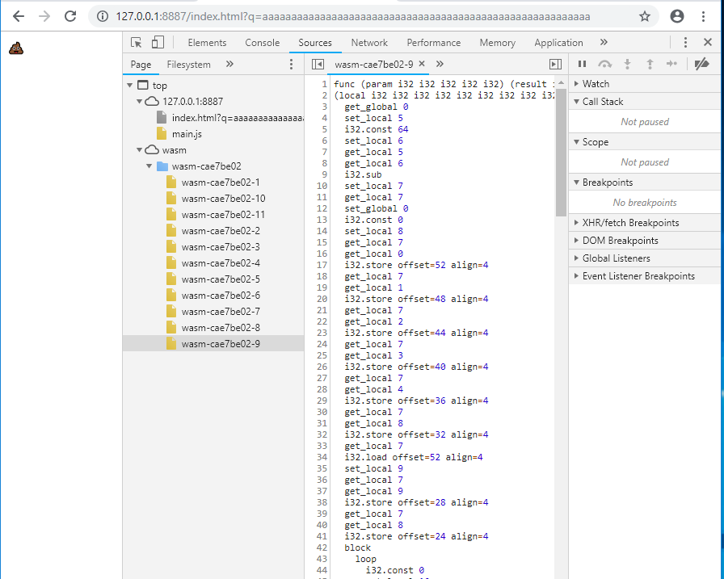
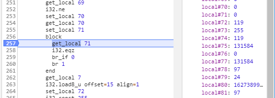

Challenge 5: "web2point0"
Admittedly, my solution to challenge 5 was not the most ellegant. It worked well though, the challenge didn't take but a few hours. More time was spent finding and learning tools than was spent on the challenge itself.
The challenge gives you a zip named 'web2point0' which unzips to an html file(index.html), a javascript file(main.js), and a
WebAssembly file(test.wasm). The html file is simple. Just 12 lines that load 'main.js'. The javascript will load our wasm file and set up a few functions relating to the wasm(syscall,wasm_alloc,wasm_write,wasm_read). The most interesting secion is shown below, where the code initiates and sets a byte array with static bytes(named a), loads a paramenter given as "q" passed in the URL(named b). This is likely where our code expects our input string to be. Last it allocates space for both variables and writes them on the stack with pa and pb representing the locations of each string respectively.
Then we reach an important pivot point. That is the If statement which compares the result of a call to 'instance.exports.Match' with our input string and the static byte array as arguments to the static value 1. If we expect our input string to be loaded into a variable alongside another hex array then passed into a function named 'Match', there is a high probability that the static string is an encrypted or obfuscated answer string to which our input is compared to.

bit of javascript which runs our comparison wasm
IDA does not by default disassemble WebAssembly. The
official write-up mentions one plugin named
idawasm which extends that functionality to IDA. What i ended up using was
wabt, which is similar and wasn't bad in the least.
Wabt allows us to convert wasm to C source with 'wasm2c.exe'. It has other functionality such as a converter to WebAssembly Text format, an interpreter, an object dumper and more but we're not going to use those.

running wabt wasm2c
The C code output by wabt isn't pretty in the least, and you'll notice that there is a lot of data movement that seems unnecessary, which can cloud the view of what the code does. Just as we always do though, we start with what we know and follow the data. Here we know that there is an exported function named 'Match' that should have our interesting variables. We can go to Match in our C code and watch where our variables are used. First we see all 4 parameters stored to a spot in memory(i32_store). Right afterwards they are loaded back into local variables(i32_load). Those variables are then passed to another function named 'f9' in the wabt output.

Match function
If we parse over f9 quickly, we notice an "L1:" which indicates a loop. Loops are alway interesting, especially when we see then using data that we are following. We can confirm they are using our input data and static string by following the parameters in the code. We see them stored to a memory location plus some static integer(indicating location) just before we enter the loop. We see the same memory locations being loaded within the loop.
If we expect this code is manipulating our input then comparing, we should find the code that it jumps when it decides your input is wrong. This fail condition in this code is at location "B3". This location is defined just after the end of our loop(which is the 'goto L1'). We can follow this back to 2 locations. The first of which is not long after our loop starts, and the second is quite a ways down.
I will often follow my static analysis with some analysis in the debugger just so that i can see what the memory and registers look like at that point this execution. This is especially helpful when trying to understand what an if statement may be looking at to break or not. The best debugger i found was in Chrome. The firefox debugger was underwhelming and didn't offer breakpoints during the time of the challenge(i think it does now). The javascript uses a 'fetch' function, which chrome doesn't allow to load files from disk. So in order to debug this, we need to host it. The simplest way is with a Chrome extension named
Web Server for Chrome. With this we can simply select a folder to serve and go!

Chrome debugger is best debugger
With a test input of a bunch of a's(something predictable), we set our breakpoints at the 'br_if' functions. If we run the code and view the stack at each function, we notice nothing interesting on the initial loop, but also nothing being placed into the stack variables that are often being referenced. Its all 0's. The next loop is not the same. It has most of the stack functions filled.
This is where we got a bit lucky with this challenge. A few of the variables on the stack are within the valid printable ASCII range. The first of which is decimal 119(0x77) which is a 'w', the second is a decimal 97(0x61). We know that our input is 'a' so this could mean something or it could be total coincidence. Since we take easy wins, we might as well try to run this multiple times grabbing the letters that appear on the stack. If at some point we dont get letters or the letters we get are jumbled then we know it was just coincidence.

flag loading in plaintext
Running this loop multiple times, we get to see that this was not coincidence. We concatenate the characters and get the string
wasm_rulez_js_droolz@flare-on.com. If we input that as our answer we are given the celebratory party popper instead of the disappointing smiling poop.
This stumbling across the answer is only possible because the answer ciphertext is decrypted back to plaintext then compared to our input string in plaintext. This makes it very easy to follow wherever the code sends your input and eventually compares it, then you just need to save the string or character that your input is compared against. This would be extremely unsafe in a similar production scenario, such as authentication mechanisms. Since the algorithm does not change, having an authentication mechanism which decrypted/deobfuscated your password then compared it to the plaintext input that a user gives leaves the password unencrypted in memory which opens the easy potential for an attacker to grab it. If you factor in remote authentication, now you're talking about moving a password which is encrypted/obfuscated in a weak manner over the wire, or sending the plaintext password over the wire. Neither of which are acceptable. The better scenario is
hashing. Where the password is stored in an irreversible fashion, then any input is hashed with the same algorithm(which is not reversible) and the result of the hashing is compared.